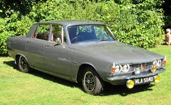

Modell: Rover 2000
Baujahr: 1963-1977
Produktionsstückzahl: 240.000+
Motor: 2.0L I4
Leistung: 104 PS
Höchstgeschwindigkeit: 170 km/h
Modell: Rover P6
Baujahr: 1963-1977
Produktionsstückzahl: 320.000+
Motor: 2.0L I4 / 3.5L V8
Leistung: 105 PS
Höchstgeschwindigkeit: 175 km/h
Modell: Rover 75
Baujahr: 1999-2005
Produktionsstückzahl: 200.000+
Motor: 1.8L I4 / 2.5L V6
Leistung: 118-174 PS
Höchstgeschwindigkeit: 205 km/h

Modell: Rover 3500
Baujahr: 1968-1977
Produktionsstückzahl: 150.000+
Motor: 3.5L V8
Leistung: 146 PS
Höchstgeschwindigkeit: 180 km/h
Modell: Rover Mini
Baujahr: 1990-2000
Produktionsstückzahl: 1.2 Millionen+
Motor: 1.0L I4
Leistung: 60 PS
Höchstgeschwindigkeit: 140 km/h